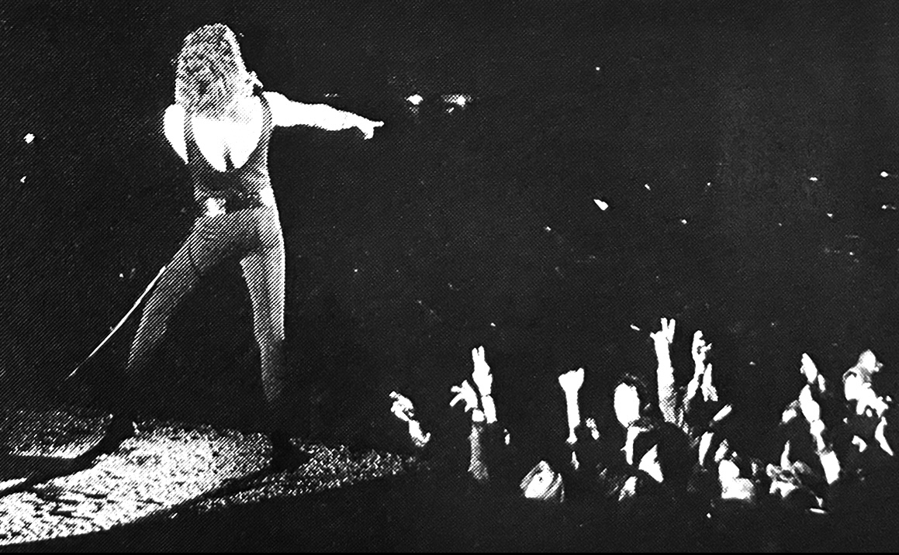
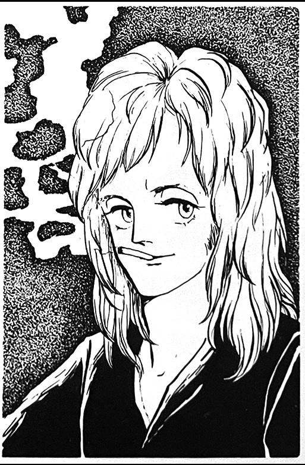

Queen Thoughts—Looking Back on the Year
by Hamasaki of Warner Pioneer

"let them eat cake" she saidThis year seems to have been the most fruitful yet, what with the huge successes of their US tour (and of course in Japan as well), which was ranked as a top bill, and their huge concert in Hyde Park on September 18th, which drew an audience of 100,000, making it a very big and meaningful year for Queen.
Their fourth album, A Night at the Opera, was released on December 24th, and together with the single Bohemian Rhapsody, it achieved astonishing success, easily breaking sales records previously held by Led Zeppelin.
No matter what radio show you listen to BoRhap is ranked no. 1, and no matter what magazine you look at, Queen is the center of attention (of course, that won't change for quite a while!). And in the midst of this Queen whirlwind, their second visit to Japan gave us a glimpse of their musical sense and flawless live performance once again.
This confirmed to me that they are a genuine rock group, clearly not a flash in the pan, and I felt that when they came to Japan they had the confidence and awareness that a no. 1 group needs to have.

But as I said before, Queen is not merely a popular idol group, and the total sound and flawless performance that Queen strives for are unique to Queen and not found in any other group. If there are people who are thinking of moving away from the fandom, I don't try to stop them, because I want them to know about other groups and listen to other music as well. Then that person will realize, "Queen really was the best group after all!"
And when you, Japanese fans, when you get your hands on the new album that will soon be released, you will surely feel the effects of Queen coursing through your veins.